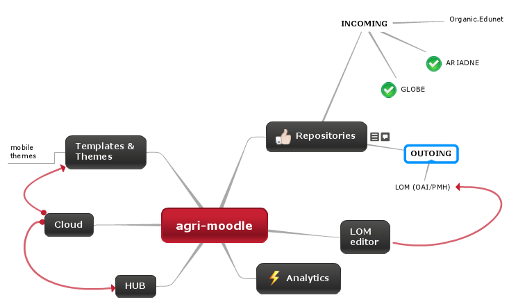

agriMoodle
Concept & Vision
Tasos Koutoumanos
tkout at agroknow.gr
Tasos Koutoumanos
tkout at agroknow.gr

Provide a fresh Moodle 2.x installation bundle, that:
June, 2012: a first demo is made available online.
July, 2012: a first operational is made available online.
October, 2012: a first pilot with real users (V3DAS trainers).
Trainers want to use Moodle for everything
For one thing, LOM support into Moodle is a great opportunity
A project is complete when it starts working for you, rather than you working for it.Scott Allen
Interested? Read more on the agriMoodle and the agriMoole HUB's concept presentations.
Then visit the 1st official agriMoodle instance.